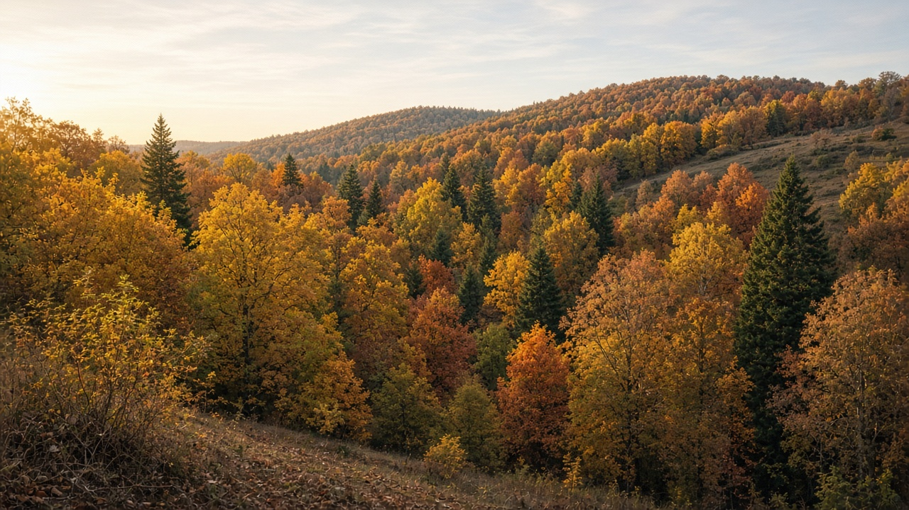
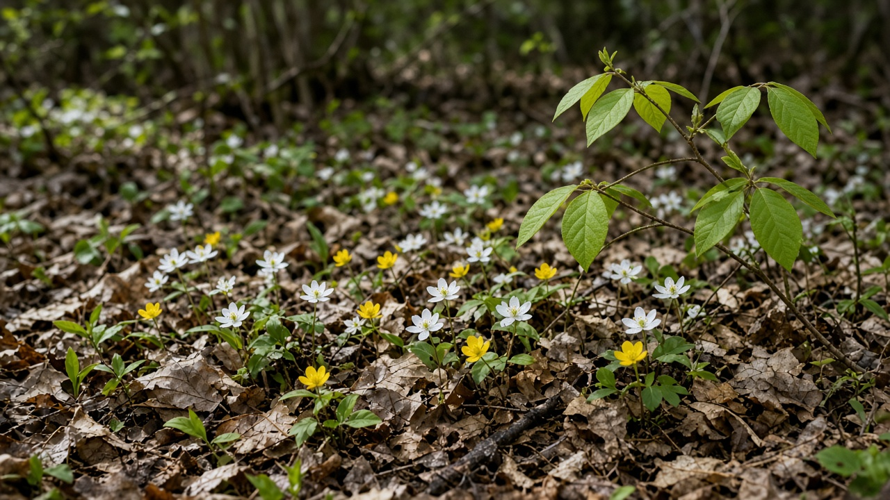
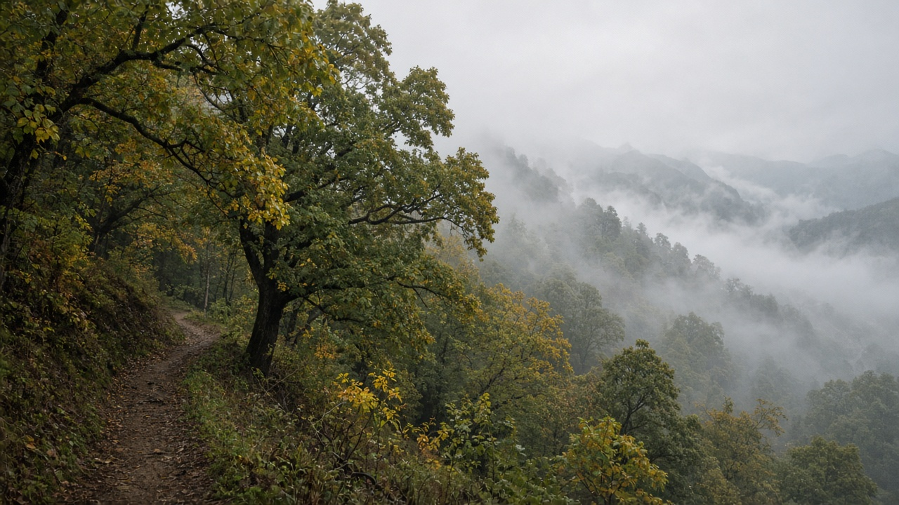

Temperate Forests and Seasonal Dynamics
Published on August 20, 2026

Temperate forests occupy mid-latitude belts where winters are cool to cold and summers are warm enough for a distinct growing season. Broadleaf deciduous stands drop leaves in autumn, while mixed and evergreen conifer forests keep foliage through winter but slow photosynthesis when temperatures and day length fall. Seasonal dynamics—budburst, flowering, fruiting, leaf fall, and dormancy—are timed to photoperiod, accumulated heat, and soil moisture, so a late frost or an early drought can shift the entire calendar of the stand. Leaf litter that accumulates each autumn feeds fungi, invertebrates, and soil microbes, returning nutrients in a pulse that spring herbs and tree roots exploit. These forests therefore store carbon not only in trunks but in a yearly cycle of litter, soil organic matter, and below-ground reserves that managers must protect as carefully as standing timber.
Canopy closure in summer creates a shaded understory, yet spring light before leaf-out allows a brief flush of woodland herbs and seedling growth. Mast years, when oaks, beeches, or other trees produce unusually heavy seed crops, ripple through food webs and regeneration, followed by lean years that limit browsing and seedling survival. Windthrow, ice storms, and insect outbreaks reset patches, producing the uneven age structure typical of healthy temperate landscapes. Human harvest that always removes the largest trees, or planting that replaces mixed hardwoods with a single conifer, flattens this seasonal and structural variety. Monitoring phenology with field plots and satellite greenness indices now helps detect climate-driven advances in spring and delayed autumns, which alter frost risk, pest timing, and carbon uptake.
Stewardship of temperate forests benefits from matching silviculture to seasonal windows: thinning and harvest outside nesting and flowering peaks, retaining mast trees, and leaving dead wood that overwinters insects and fungi. Mixed-species regeneration buffers a stand against a pest that prefers one host, while riparian buffers keep leaf-litter subsidies flowing into streams that cool fish habitat in summer. In mountain belts that grade from temperate broadleaf into subtropical and alpine zones, including parts of the Himalaya, seasonal fog, monsoon rain, and winter frost create hybrid calendars that local forest users already know. Teaching students to read bud scales, litter layers, and ring widths turns seasonal dynamics from a scenic backdrop into a practical guide for when to plant, graze, collect fuelwood, and rest a compartment.

समशीतोष्ण वन मध्य अक्षांश पट्टीमा हुन्छन् जहाँ जाडो चिसोदेखि निकै चिसो र गर्मी स्पष्ट वृद्धि मौसमका लागि पर्याप्त न्यानो हुन्छ। चौडापात पतझड स्ट्यान्डले शरदमा पात झार्छन् भने मिश्रित र सदाबहार कोनिफर वनले जाडोभरि पात राख्छन् तर तापक्रम र दिन लम्बाइ घट्दा प्रकाश संश्लेषण सुस्त पार्छन्। मौसमी गतिशीलता—कलिला पलाउने, फूल फुल्ने, फल लाग्ने, पात झर्ने र सुषुप्तता—प्रकाश अवधि, संचित ताप र माटो चिस्यानसँग तालमेल हुन्छ, त्यसैले ढिलो तुषारो वा चाँडो खडेरीले स्ट्यान्डको सम्पूर्ण पात्रो सार्न सक्छ। प्रत्येक शरदमा जम्मा हुने पात कूडाले ढुसी, अकशेरुकी र माटोका सूक्ष्मजीवलाई खुवाउँछ, वसन्त जडीबुटी र रूख जरा प्रयोग गर्ने पोषक तरंग फर्काउँछ। यी वनले कार्बन काण्डमा मात्र होइन कूडा, माटोको जैविक पदार्थ र भूमिगत भण्डारको वार्षिक चक्रमा राख्छन् जसलाई काठजत्तिकै जोगाउनुपर्छ।
गर्मीमा छानो बन्द हुँदा तल्लो वन छायाँ पर्छ, तर पात पलाउनुअघिको वसन्त प्रकाशले जडीबुटी र बिरुवा वृद्धि छोटो लहर दिन्छ। मास्ट वर्षमा ओक, बीच वा अन्य रूखले असामान्य रूपमा धेरै बीउ दिन्छन्, खाद्य जाल र पुनरुत्पादनमा तरंग पठाउँछन्, त्यसपछि कमजोर वर्षले चराइ र बिरुवा बाँच्ने दर सीमित गर्छ। हावाले ढाल्ने, बरफ आँधी र कीरा प्रकोपले प्याच रिसेट गर्छ, स्वस्थ समशीतोष्ण परिदृश्यको असमान उमेर संरचना पैदा गर्छ। सधैं सबैभन्दा ठूला रूख हटाउने कटान वा मिश्रित चौडापातलाई एउटै कोनिफरले बदल्ने रोपणले यो मौसमी र संरचनात्मक विविधता च्याप्छ। क्षेत्र प्लट र उपग्रह हरियाली सूचकले फिनोलोजी निगरानी गर्दा वसन्त अघि सर्ने र शरद ढिलो हुने जलवायु चाल देखिन्छ, जसले तुषारो जोखिम, कीरा समय र कार्बन ग्रहण बदल्छ।
समशीतोष्ण वन हेरचाह मौसमी झ्यालसँग वनविज्ञान मिलाउँदा फाइदा लिन्छ: गुँड र फूल चोटोबाहिर पातलो पार्ने र कटान, मास्ट रूख राख्ने, र कीरा तथा ढुसी जाडो बिताउने मृत काठ छोड्ने। मिश्रित प्रजाति पुनरुत्पादनले एउटा होस्ट मन पराउने कीराविरुद्ध स्ट्यान्डलाई बचाउँछ भने नदीकिनार बफरले गर्मीमा माछा वासस्थान चिसो राख्ने खोलामा पात कूडा अनुदान बगाइराख्छ। समशीतोष्ण चौडापातबाट उपोष्ण र उच्च हिमाली क्षेत्रमा ग्रेड हुने पहाडी पट्टीमा, हिमालयका भागसहित, मौसमी कुहिरो, मनसुन वर्षा र जाडो तुषारोले स्थानीय वन प्रयोगकर्ताले चिनेको मिश्रित पात्रो बनाउँछ। विद्यार्थीलाई कलिला स्केल, कूडा तह र वार्षिक घेरा पढ्न सिकाउँदा मौसमी गतिशीलता दृश्य पृष्ठभूमिबाट कहिले रोप्ने, चराउने, दाउरा संकलन गर्ने र कम्पार्टमेन्ट विश्राम दिने व्यावहारिक मार्गदर्शक बन्छ।

समशीतोष्ण वन मध्य अक्षांश पट्टियों में होते हैं जहाँ सर्दी ठंडी से अत्यंत ठंडी और गर्मी स्पष्ट वृद्धि मौसम के लिए पर्याप्त गर्म होती है। चौड़ी पत्ती वाले पर्णपाती स्टैंड शरद में पत्ते गिराते हैं, जबकि मिश्रित और सदाबहार कोनिफर वन सर्दी भर पत्ते रखते हैं पर तापमान और दिन लंबाई घटने पर प्रकाश संश्लेषण धीमा करते हैं। मौसमी गतिशीलता—कली फूटना, फूलना, फलना, पत्ती गिरना और सुषुप्तावस्था—प्रकाश अवधि, संचित ऊष्मा और मिट्टी नमी से समयबद्ध होती है, इसलिए देर से पाला या जल्दी सूखा पूरे स्टैंड का कैलेंडर सरका सकता है। प्रत्येक शरद में जमा पत्ती कूड़ा कवक, अकशेरुकी और मिट्टी सूक्ष्मजीवों को खिलाता है, वसंत जड़ी-बूटियों और वृक्ष जड़ों द्वारा प्रयुक्त पोषक तरंग लौटाता है। ये वन कार्बन केवल तनों में नहीं कूड़ा, मृदा जैव पदार्थ और भूमिगत भंडार के वार्षिक चक्र में रखते हैं जिसे इमारती लकड़ी जितनी सावधानी से बचाना चाहिए।
गर्मी में छत्र बंद होने पर अधोवन छायादार होता है, पर पत्ती निकलने से पहले वसंत प्रकाश जड़ी-बूटियों और पौधों की वृद्धि की संक्षिप्त लहर देता है। मास्ट वर्षों में ओक, बीच या अन्य वृक्ष असामान्य रूप से भारी बीज फसल देते हैं, खाद्य जाल और पुनरुत्पादन में तरंग भेजते हैं, उसके बाद कमजोर वर्ष चरान और पौधे जीवित रहने की दर सीमित करते हैं। पवनपात, बर्फ़ तूफ़ान और कीट प्रकोप पैच रीसेट करते हैं, स्वस्थ समशीतोष्ण परिदृश्य की असमान आयु संरचना पैदा करते हैं। हमेशा सबसे बड़े वृक्ष हटाने वाली कटाई या मिश्रित चौड़ी पत्ती को एक कोनिफर से बदलने वाला रोपण इस मौसमी और संरचनात्मक विविधता को चपटा करता है। क्षेत्र प्लॉट और उपग्रह हरियाली संकेतक से फीनोलॉजी निगरानी करने पर वसंत आगे खिसकना और शरद देर होना दिखाई देता है, जो पाला जोखिम, कीट समय और कार्बन ग्रहण बदलते हैं।
समशीतोष्ण वन प्रबंधन मौसमी खिड़कियों से वनविज्ञान मिलाने पर लाभ पाता है: घोंसला और फूल चोटियों के बाहर विरलन और कटाई, मास्ट वृक्ष रखना, और कीट व कवक को सर्दी बिताने देने वाला मृत काष्ठ छोड़ना। मिश्रित प्रजाति पुनरुत्पादन एक मेज़बान पसंद करने वाले कीट के विरुद्ध स्टैंड को बचाता है, जबकि नदी किनारे बफर गर्मी में मछली आवास ठंडा रखने वाली नालियों में पत्ती कूड़ा अनुदान बहाते रहते हैं। समशीतोष्ण चौड़ी पत्ती से उपोष्ण और उच्च अल्पाइन क्षेत्रों में ग्रेड होने वाली पर्वतीय पट्टी में, हिमालय के भाग सहित, मौसमी कुहासा, मानसून वर्षा और शीतकालीन पाला स्थानीय वन उपयोगकर्ताओं द्वारा ज्ञात मिश्रित कैलेंडर बनाते हैं। छात्रों को कली शल्क, कूड़ा परतें और वलय चौड़ाई पढ़ना सिखाने पर मौसमी गतिशीलता दृश्य पृष्ठभूमि से कब रोपें, चराएँ, ईंधन काष्ठ संग्रह करें और कक्ष विश्राम दें का व्यावहारिक मार्गदर्शक बन जाती है।